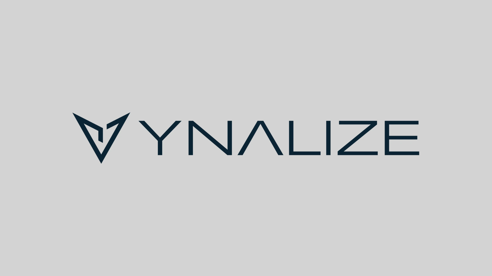
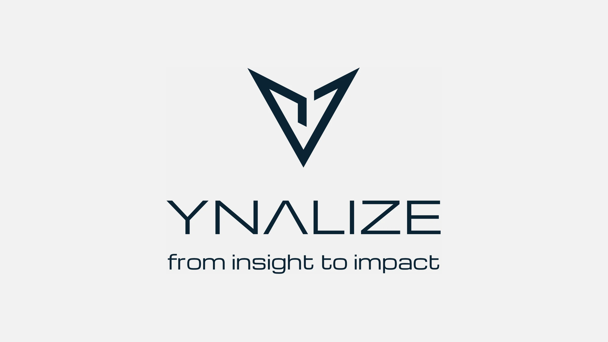
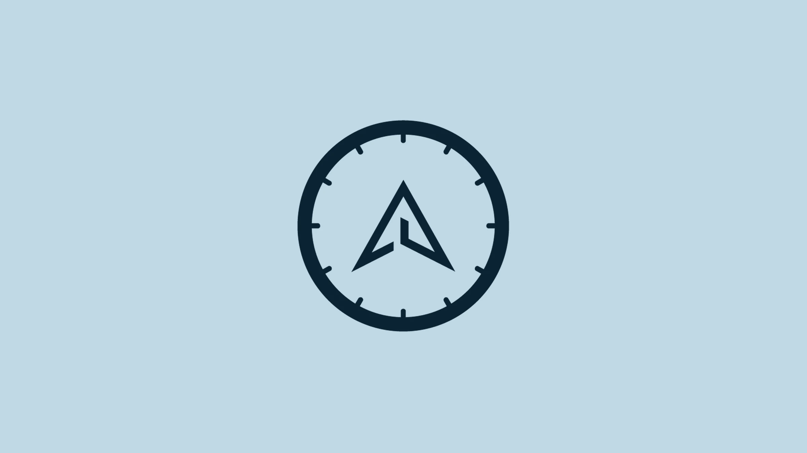
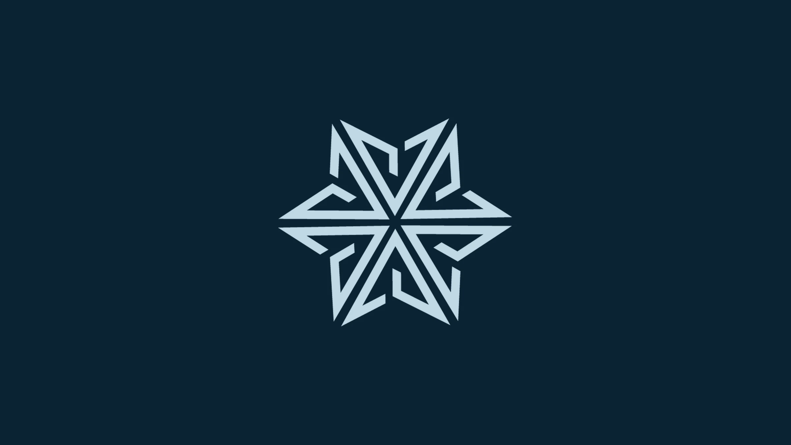
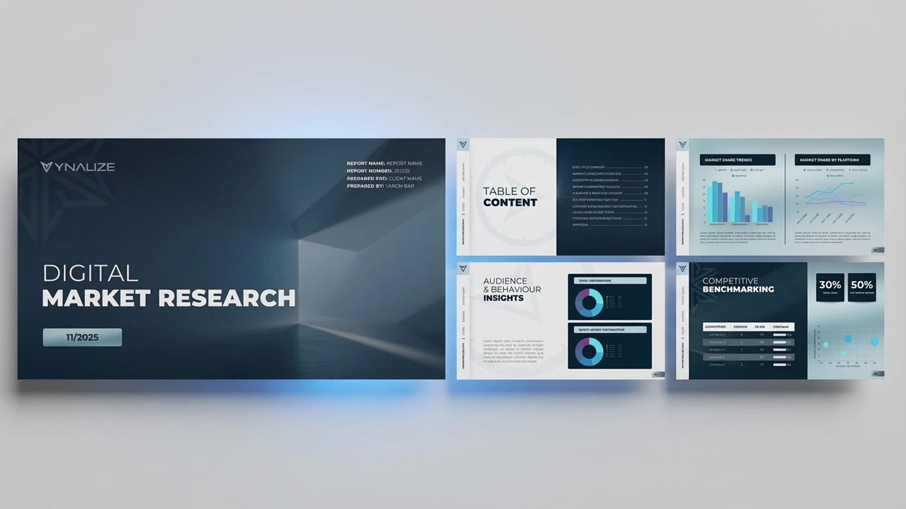
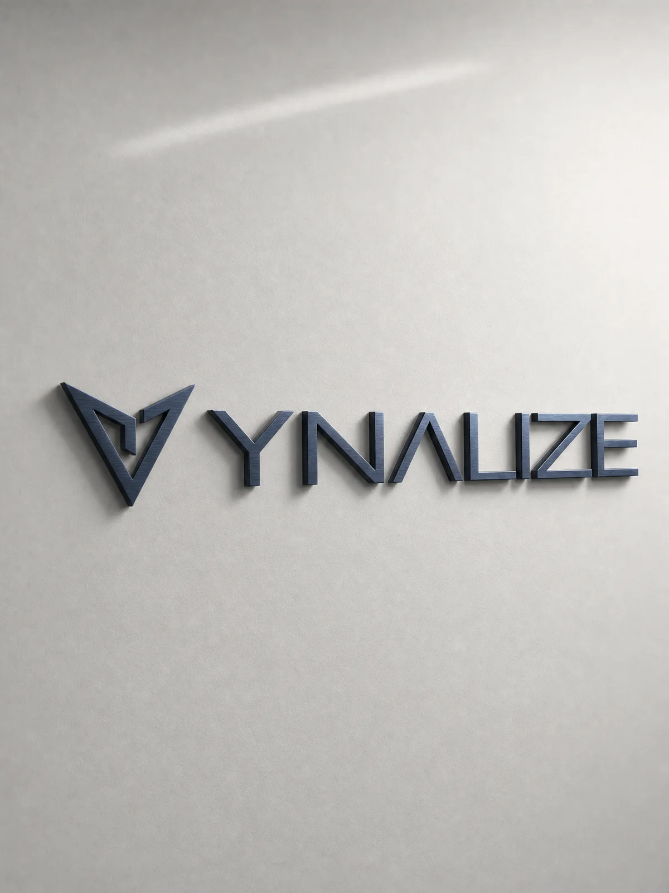
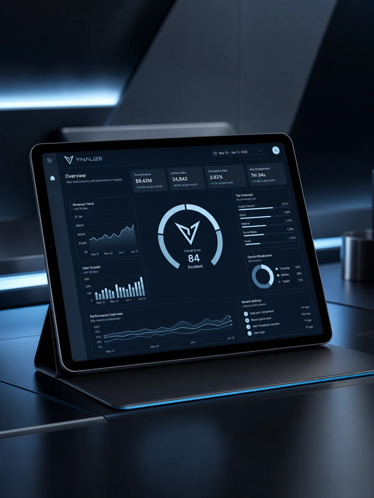
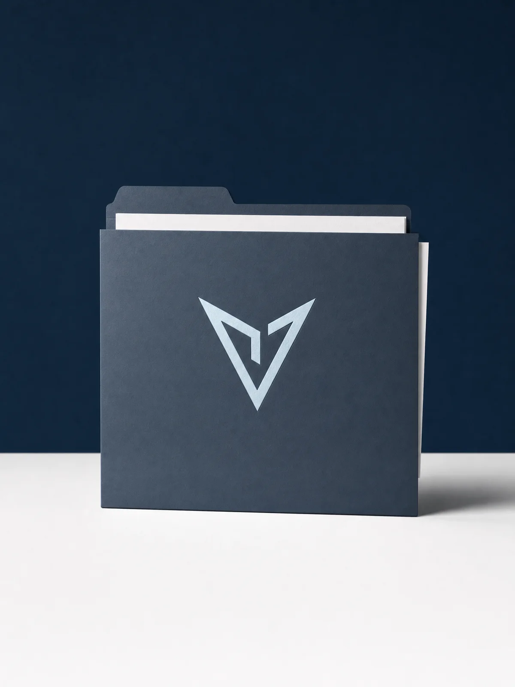

YNALIZE
על הפרויקט
ירון מנתח נתוני שוק ודיגיטל לעסקים, והגיע אליי כדי להקים מותג חדש שישדר דיוק אבל גם נגיעה אנושית. בחרנו יחד את השם YNALIZE, Analyze עם Y של Your, Why וירון, עיצבתי לוגו של מצפן וחץ בקו אחד רציף, ובניתי סביבו צבעוניות, אלמנטים גרפיים, כרטיסי ביקור ומצגת עסקית ממותגת לדוחות.
- מה עשיתי
- בחירת שם · מיתוג
- תחום
- אנליטיקה ונתונים
01מיתוג




Deep Blue#0A2333
Soft Cyan#C0D9E5
Light Grey#D3D3D3
Ultra Light Grey#F2F2F2
02תוצרים גרפיים




